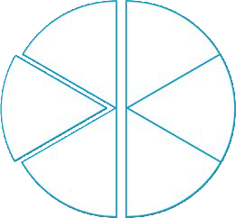

Example 1
The teacher divided half of a circular sheet of paper into three equal pieces and shared them equally with three pupils. What fraction of the whole circular sheet did each pupil get?
Steps
1.
The problem description can be written using numbers and the division symbol as follows:
2.
If half of a piece of paper is divided into three equal parts, there will be a total of six pieces.
3.
One piece out of 6 in the fraction is written as Thus, Therefore, each pupil got of the circular sheet.

Alternative solution
1.
Convert 3 into a fraction,
2.
Change the denominator to the numerator and the numerator to the denominator,
3.
Multiply:
Therefore, each pupil got of the whole circular sheet.